Cos'è una pagina web
Una pagina web è un insieme di documenti di testo il primo tipo di documento che vedremo è il documento con estensione .html .
Un documento html rappresenta gli elementi visibili nella pagina , una pagina web può essere composta da un solo documento .html in casi di singole pagine.
Nel caso di sito con diverse pagine si possono usare anche diversi documenti .html diversi.
Per lavorare su una pagina web la prima cosa da fare è preparare una cartella in cui inserire i documenti che creeremo
e le varie risorse ( icone, immagini , video ), per riuscire facilmente ad accedere alle varie risorse è una buon pratica
ogni volta che si incontra un nuovo tipo di risorsa creare una sottocartella rispetto a dove si trova il file html a cui si lavorare.
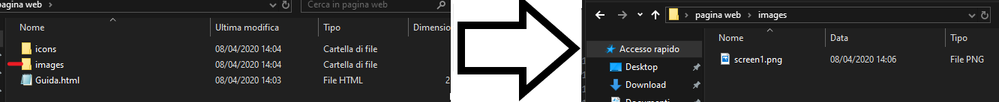
Questa immagine mostra un esempio di come organizzare i file e le cartelle mostriamo dove è stata posizionta l'immagine mostrata qui sopra.
Struttura di un documento html
Un documento html può essere immaginato come un insieme di blocchi. Un esempio di blocco è un titolo , un altro per esempio è un immagine si può anche avere un artiocolo.
I blocchi possono essere composti in modi diversi si possono mettere blocchi uno dopo l'altro o pure uno dentro l'altro(per esempio all'interno di un articolo è possibile ).
Altri blocchi hanno solo lo scopo di raggruppare gruppi di elementi senza essere direttamente visibili ma sono comodi per organizzare gli altri elementi
e ci serviranno per abbellire e modificare l'apparenza grafica .
Esistono anche 3 blocchi che non possono essere inseriti più di una volta in un documento html.
Ogni blocco viene rappresentato con 2 "tag" uno di apertura e uno di chiusura.
La sintassi di un blocco è la seguente:
<nome blocco> contenuto blocco </nome blocco>Impostiamo il nostro primo progetto
Creiamo una cartella sul desktop chiamata progetto 1.
Apriamo Visual studio Code e selezioniamo file-> New File . Successivamente selezioniamo file-> Save as... selezioniamo la cartella progetto 1
scegliamo il nome del file (questo nome non dev'essere uguale al nome della pagina) quindi per esempio chiamiamolo home e
successivamente scegliamo dal menu a tendina HTML(dovrebbe essere la seconda opzione dall'alto) a questo punto salviamo.
Per vedere se il salvataggio e la scela del formato sia andata correttamente guardiamo in alto a visual studio code nel centro dellasbarra superiore
dovrebbe apparire home.html come nome. A questo punto proviamo a scrivere < (minore) dovrebbero apparire una tendina con dei suggerimenti.
Se non appare c'è qualcosa che non va e dovremo guardare sul momento che cosa succede.
La base di un documento html
Per prima cosa in un documento HTML nella prima riga è consigliato scrivere questa riga <!DOCTYPE html> a noi non interessa questa riga
semplicemente avverte il browser su cui si sta aprendo il documento che il documento deve essere letto come html. Anche senza questa riga il
browser interpreta il contenuto come html ma esistendo tante versioni se manca questa riga ogni browser interpreta il documento in modo diverso
con questa riga si avverte il browser che si sta lavorando con la versione 5 di html html.
Dopo questa riga inizia il vero e proprio documento. Per prima cosa vediamo i 3 blocchi che possono essere inseriti solo una volta e che rappresentano
una divisione tra componenti della pagina.
Il primo blocco è <html> </html> questo rappresenta semplicemente un contenitore che contiene la pagina.
All'interno di questo vengono posizionati gli altri due blocchi principali <head> </head> e <body> </body>
Il blocco head è usato per dare delle informazioni al browser e quasi tutti i blocchi definiti nel head non sono chiaramente visibili nella pagina.
Le uniche cose direttamente visibili che si possono inserire nella pagina sono l'icona e il titolo della pagina.
Il blocco body contiene il vero e proprio contenuto della pagina. I componenti che si vedono nella finestra del browser.
A questo possiamo cominciare a lavorare su una pagina. Da adesso vedremo poco per volta i vari tag utili per costruire la base di una pagina.
Una volta compresi i tag e il loro utilizzo passeremo poi alla modifica della grafica della pagina.
Cancelliamo tutto ciò che magari abbiamo scritto su visual studio e scriviamo html dovrebbe apparire una tendina scegliamo la riga html:5 con le frecce e
schiacciando invio visual studio farà comparire uno scheletro di quello di cui abbiamo parlato.
Al suo interno notiamo delle cose nuove in html notiamo una scritta lang="en" questo è un attributo di un tag, alcuni tag possono avere attributi
ma parlando dei vari blocchi parleremo dei vari attributi, altri invece li vedremo quando parleremo della parte più grafica.
Avrete sicuramente presente quando andando su un sito in inglese il browser vi chiede se deve tradurre la pagina, il browser è in grado di consigliare
queste traduzioni proprio grazie all'attributo lang del blocco html cofronta il tag lang con la lingua del vostro pc e se sono diverse propone la traduzione
quindi se su un sito straniero non vi appare questo messaggio al 90% sono programmatori che hanno dimenticato la base della base , il browser è
intelligente prova a correggere errori nostri per esempio se non chiudiamo un blocco prova a capire lui dove andava chiuso , ma non è perfetto, non può
leggere il contenuto della pagina intera e capire in che lingua è la pagina. Sostituiamo en con it.
Ora spostiamoci al blocco head al suo interno vediamo 3 blocchi differenti 2 blocchi di nome meta e un blocco title.
I blocchi meta definiscono metadati della pagina (informazioni astratte) possiamo notare che questi blocchi meta sono aperti ma non sono chiusi,
questo perchè rappresentando informazioni astratte non rappresentano un vero e proprio blocco , il browser interpreta i blocchi meta come se fossero subito chiusi
(è sempre possibile chiudere i blocchi meta con </meta> ma non essendo richiesto non li tocchiamo).
Il primo blocco meta dice il charset cioè l'insieme di caratteri che il browser deve aspettarsi nella pagina. Se comparissero caratteri inattesi
si verifica il fenomeno dei mojibake
Il set UTF-8 permette di rappresentare praticamente tutti i caratteri comuni per quasi tutte le lingue. Più di così non andrei a fondo ma come curiosità
se si toglie quella riga in alcuni browser i caratteri accentati non vengono accettati e per inserli nel testo era necessario usare sequenze di caratteri
come à per inserire à.
Il secondo blocco meta non ci serve quindi lo cancelliamo.
Il blocco title come dice il nome rappresenta il titolo della pagina al posto della scritta Document si può scegliere qualsiasi titolo preferiamo.
Alcuni caratteri non possono essere inseriti direttamente perchè hanno significato nella sintassi di html per esempio < , > per i quali è necessario
usare delle sequenze di caratteri & lt per <,& gt per > anche in questo caso rimuovendo lo spazio tra & e la sequenza di lettere.
Una cosa da notare è che queste sequenze spesso hanno un significato lt per esempio indica Less then quindi minore. Per la lista completa di caratteri
per cui è necessaria una sequenza guardare questo link .
Una linea guida è sempre provare ad inserire il carattere salvare aprire il documento html sul browser e vedere se il carattere è mostrato correttamente.
Ora abbiamo visto tutto ciò che visual studio code ha scritto per noi. Da adesso cominceremo a vedere i componenti che useremo nella composizione della pagina.
Aggiungiamo un icona al nostro sito
L'icona del sito non fa parte del corpo della pagina è mostrata in alto nel tab del browser , da questo possiamo capire che il blocco che
rappresenta l'icona della pagina vada inserito nel blocco head. Il blocco che ci permette di aggiungere un icona è <link>.
Possiamo usare un qualsiasi file di immagine ma qui presento il metodo con un file .ico perchè e fra i formati
migliori per le icone di un sito o di un applicazione. Per convertire un png o molti altri formati di immagine in .ico si può fare su questo
sito
Un icona ha una risoluzione di massimo 64px x 64px quindi non ha senso usare immagini complesse è importante avere un immagine che
sia facile da ricordare, e sia significativa con l'argomento trattato nella pagina , un esempio magari un icona con un libro aperto
per una pagina di uno scrittore (è meglio evitare cose somiglianti a icone famose facebook/instagram etc.).
Chiamiamo l'icona icon.ico e creiamo una cartella icone dentro la nostra cartella progetto 1 , chiamiamola icone
e mettiamoci dentro icon.ico.
Dopo il tag title chiuso( </title>) con invio andiamo a capo e aggiungiamo una riga.
<link rel="icon" type="image/x-icon" href="./icone/icon.ico" >
Guardiamo molto velocemente cosa rappresentano gli attributi di questo blocco rel="icon" avverte il browser di usare
il contenuto come icona, type="image/x-icon" avverte il browser che il formato dell'icona è .ico l'ultimo attributo
href="./icone/icon.ico" dice al browser dove trovare il file, ./ possiamo interpretarlo come "in questa cartella"
dove questa cartella indica la cartella in cui si trova il documento html il resto dice cosa dev'essere cercato
quindi icone/icon.ico un modo facile per leggere tutto in una sola volta è leggere tutto da destra a sinistra
cerca icon.ico che è nella cartella icone che è in questa cartella.
Ora dovremo aver questo risultato su visual studio code.
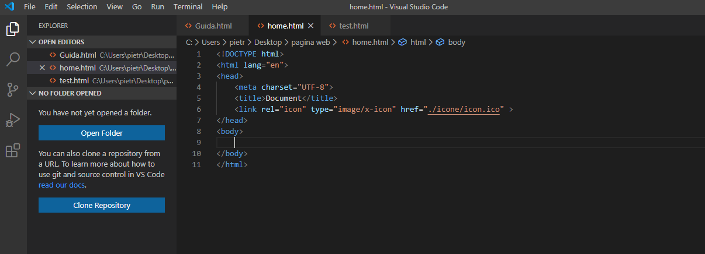
Il body e il suo contenutoDefinizioni che useremo
Da questo punto in poi chiameremo tag di apertura un elemento della forma <nome > e chiameremo tag di chiusura
</nome > chiameremo contenuto di un tag qualsiasi elemento che si trova tra il > di un tag di apertura
e il < del corrispondente tag di chiusura. Chiameremo inoltre attributo ogni elemento del tipo
nome-elemento="valore" all'interno di un tag di apertura.
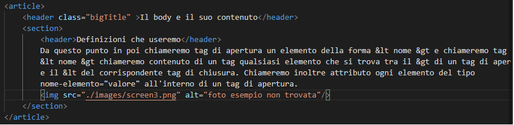
Proviamo ad analizzare questo pezzo di html per capire queste definizioni, ignoriamo per ora il significato di questi
tag. Vediamo che il blocco inizia con un tag di apertura e di chiusura di un blocco article , gli altri blocchi
che sono tra questi due tag sono quindi contenuto del tag article , il tag header subito dopo ha come contenuto solo del testo,
però possiamo notare che nel tag di apertura abbiamo un attributo, l'attributo class con valore bigTitle.
Quando parleremo dell'aspetto grafico parleremo dell'attributo class e di un suo simile cioè id, questi due attributi
ci permettono di raggruppare elementi a cui vogliamo assegnare una certa grafica in comune.
Dopo la chiusura di header vediamo un blocco section, cos' è il contenuto di questo tag?
Tra i vari contenuti possiamo notare un tag img , dal nome si può immaginare che rappresenti un immagine,
non essendo possibile inserire testo dentro un immagine e non essendo sensato avere altri elementi interni
il tag img non richiede un tag di chiusura per questioni di bellezza stilistica in questi casi spesso si pone
un / prima della fine della fine del tag di apertura per esplicitare il fatto che non c'è un tag di chiusura.
Guardiamo velocemente gli attribui del tag img , ne parleremo successivamente ma il tag di per sè è molto semplice
troviamo un attributo src(source) che dice al browser dove trovare l'immagine, qui si può mettere un link a una qualsiasi
immagine online oppure ad un file sul proprio computer, proviamo a capire dove si trova la foto e temporaneamente spostarla.
Leggiamo il valore da destra a sinistra , la foto è screen3.png che si trova nella cartella images che si trova nella cartella
attuale (progetto1). Presa l'immagine e spostata ricarichiamo la guida, al posto della foto vedremo un icona di foto non trovata
e troveremo una nota che è proprio il contenuto dell'attributo alt(alternative) che specifica cosa scrivere se l'immagine non viene trovata.
Se siamo arrivati fino a qui ritorniamo screen3.png al suo posto e vediamo un comportamento che inizialmente causa confusione ed è meglio vederlo subito.
Cosa il browser ignora e come non farlo ignorare
Immaginiamo di scrivere un testo su world sarà successo diverse volte che anzichè uno spazio tra due parole
ne abbiamo inseriti 2/3 per coprire questo tipo di errori il browser ignora gli spazi fra parole dopo il primo.
Se scriviamo "ciao tutti" oppure "ciao tutti" avremo lo stesso risultato(beh c'erano 10 spazi tra ciao e tutti ma voi non li vedete).
Per motivi di adattabilità della pagina a schermi di dimensioni diverse anche se si va a capo il testo sul browser non andrà a capo in quel punto.
Come risolvere questi problemi nel caso in cui si voglia avere veramente scrivere ciao tutti
al posto degli spazi aggiuntivi è necessario inserire la sequenza   (non break space).
Per forzare un a capo si usa un tag (che non richiede chiusura) il tag <br> (break che sta per line break/ a capo).
Immaginiamo di avere una parola lunghissima in un testo che siamo sicuri che su diversi schermi non sarebbe visualizzabile per interno,
il browser potrebbe decidere di troncarla in un punto a caso o la parola sforerebbe dalla zona di testo dedicata
in caso di tali parole(molt rare) si può usare un tag <wbr> nel punto in cui si vuole suggerire al browser di
mandare la parola a capo per esempio supercarifragilisticespiralitoso. Scrivendo supercarifragilistice<wbr>spiralitoso
la parola se dovesse sforare sarebbe separata in supercarifragilistice e a capo spiralitoso.
I tag
Una volta arrivati qui quello che ci rimane da fare per una pagina per ora senza grafica è conoscere i vari tag.
I tag:
Per motivi di tempo e di utilità affronteremo principalmente questi tag che sono i principali blocchi che compongono una pagina.
Per cercare altri tag e la loro sintassi useremo questo sito.
Commenti
Un commento è un pezzo di html che il browser ignora, ogni cosa contenuta in un commento viene ignorata.
Spesso vengono dimenticati dai programmatori portando ad avere pagine che loro stessi non sanno come funzionano.
Un primo motivo per aggiungere commenti è far capire agli altri cosa hai fatto , un secondo motivo è poter capire la tua pagina
magari diversi mesi dopo averla scritta, un ultimo motivo è magari lasciare un segno nella pagina che magari non si può vedere direttamente
come la paperella che fa miao che si trova in un commento sulla pagina di amazon (no ma sono serio c'è davvero).
Un commento è un blocco che non ha bisogno di un tag di chiusura e ha questa sintassi
<!-- testo del commento --> dove tra <!-- e --> si può scrivere qualsiasi testo anche su più righe.
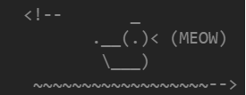
Paragrafi
Un paragrafo è un tag che può contenere del testo.
La sintassi di un paragrafo è <p> testo del paragrafo </p>
Sul questo tag non c'è tanto da dire , parliamo più del possibile testo del paragrafo, il testo può essere qualsiasi combinazione di
testo e altri tag che definiscono un determinato tipo di testo.
Presenteremo qualche tag di testo velocemente questi tag potrebbero benissimo essere saltati ma vederli e ricordarsi che esistono tag
specifici per alcune situazioni.
Esiste un tag per definire un abbreviazione per esempio HTML.
<abbr title="testo da mostrare quando passa il mouse sopra"> abbreviazione </abbr>
Esiste un tag per definire i contatti dell'autore di un articolo o di un determinata sezione , il testo verrà mostrato in corsivo.
Scritto da Pietro Maldini.
La sintassi è <address> informazioni del contatto </address>
Esiste un tag per le citazioni ad altre fonti
La sintassi per una citazione è:
<blockquote cite="url della fonte"> testo citato </blockquote>
Esiste un tag per un componente di testo che può essere nascosto.
Testo mostrato
testo opzionale
La sintassi del blocco è
<details>
<summary>Testo mostrato</summary>
<p> testo opzionale</p>
</details>
Un ultimo blocco di testo è il blocco span. Questo blocco ci servirà nella parte grafica per poter
dare determinate caratteristiche ad un pezzo di testo
<p> testo normale <span> testo che si vuole mostrare in modo diverso </span> </p> Le liste
Esistono due tipi di liste principali le liste ordinate e le liste non ordinate.
Entrambe le liste sono tag contententi un elenco di tag chiamati li (list item).
La sintassi per una lista ordinata è
<ol> lista di li </ol> dove ol sta per ordered list
Per una lista non ordinata abbiamo invece
<ul> lista di li </ul> dove ul sta per unordered list
La lista di li è un elenco di lunghezza non fissa di tag ripetuti.
<li> contenuto del elemento della lista </li> dove il contenuto può essere del testo o i tag descritti nella sezione precedente.
Un esempio di lista disordinata l'abbiamo visto nella lista dei tag Un esempio di lista ordinata è la seguente:
antipasto
primo
secondo
contorno
dolce
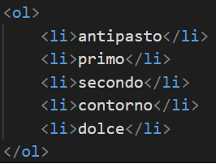
è possibile modificare il modo in cui l'ordinamento è mostrato(usare numeri romani o altre forme di numerazione) ma questo
lo vedremo nella sezione di grafica.
Link e ancore
Come facciamo a definire un link ad una qualsiasi pagina per esempio alla homepage di google?
Per inserire un link ad una pagina si utilizza il tag a (anchor).
Questo tag può essere usato in qualsiasi posto si possa inserire del testo per esempio
all'interno del tag p e dei vari tag di testo visti fino ad ora.
La sintassi del tag è
<a href="link"> testo che diventa un link </a> dove il testo contenuto tra i tag di apertura e chiusura nel caso del link sopra
è homepage di google.
Il tag "a" permette oltre a creare link ad altre pagine anche di creare link a parti diverse della pagina.
Per esempio la lista dei tag è un insieme di collegamenti interni alla pagina.
Per creare un link interno ad una pagina servono due componenti, una destinazione e un punto di partenza.
La destinazione di un collegamento interno si crea usando sempre il tag "a" però questa volta con un attributo
diverso anzichè href usiamo l'attributo id(praticamente gli diamo un nome), posizioniamo il tag a prima del blocco a cui vorremo saltare e
all'attributo id diamo un nome significativo (senza spazi), per la lista dei tag per esempio abbiamo un tag <a id="listatag"></a>
Con questo tag abbiamo posizionato un'ancora , un punto nella pagina con un determinato id.
Per creare un collegamento a quel punto usiamo sempre il tag "a" ma essendo il link interno non avremo più un link come
"http://www.google.com" per definire un salto all'ancora con id listatag come qui :la lista dei tag
dobbiamo dire al browser che il collegamento è interno ed è verso la ancora con id listatag mettendo come valore
dell'attributo href #listatag dove # indica che il collegamento è interno
<a href="#listatag"> la lista dei tag </a>
Se si omette un id di ancora dopo # il collegamento interno riporta alla cima della pagina.
Ci sono altri utilizzi per il tag a quali aprire l'applicazione di mail con il destinatario precompilato oppure
aprire l'applicazione che gestisce le chiamate con un numero precompilato come quando su google si cerca un negozio
o un ristorante e si schiaccia "chiama" sul browser e appare il numero già compilato pronto per essere chiamato.
Per questi si usa sempre href ma con sintassi diverse del collegamento , per quanto semplice la sintassi preferisco
non inserirli nella guida per ridurre la quantità di informazioni a quelle necessarie.
In caso di interesse l'esempio in
questa pagina mostra questi ultimi 2 tipi di link.
Ora dovremo essere in grado di capire questo pezzo di html Menu di navigazione
Un esempio qui può servire molto.
Il blocco usato è il blocco nav che viene usato per contenere collegamenti spesso interni alla pagina e normalmente è posto
in cima ad una pagina.
La sintassi è molto semplice :
<nav> lista collegamenti </nav> La lista di collegamenti sono diversi tag a posti uno successivo all'altro . Il tag nav può contenere teoricamente
qualsiasi testo , questa caratteristica può essere sfruttata per esempio per aggiungere separatori tra i blocchi "a"
nel caso del menu di esempio sopra | è stato usato per separare i vari link.
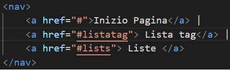
Immagini e figure
Un immagine può essere aggiunta in qualsiasi parte del documento dove si può inserire del testo.
All'interno di un immagine non è possibile inserire altri tag , il tag img non necessita un tag di chiusura.
<img src="./images/img.png" alt="testo da mostrare se manca l'immagine" title="testo mostrato quando si passa sopra col mouse"/>
Il tag img ha 3 attributi principali src
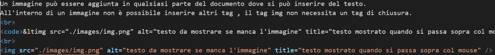
Per aggiungere una descrizione sopra o sotto un immagine si usano due tag , il blocco figure di cui l'immagine dev'essere messa come contenuto
e un tag figcaption.
<figure>
<img src="./images/img.png" alt="testo da mostrare se manca l'immagine" title="testo mostrato quando si passa sopra col mouse">
<figcaption>Fig.1 - Foto con scritta sotto</figcaption>
</figure>
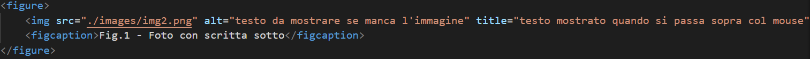
Fig.1 - Foto con scritta sottoTitoli
I titoli sono dei tag di testo contenuti in un tag chiamato header.
Esistono 6 livelli di titoli con tag h1,h2,h3,h4,h5,h6 dove minore è il numero più il titolo è grande.
Titolo di primo livello
Titolo di secondo livello
Titolo di terzo livello
Titolo di quarto livello
I titoli sopra mostrano un esempio di h1,h2,h3,h4. Il titolo h1 va usato una sola volta nell'intera pagina
è buona pratica inoltre usare i titoli in ordine crescente e non saltare livelli.
<header>
<h1>Titolo di primo livello</h1>
<h2>Titolo di secondo livello</h2>
<h3>Titolo di terzo livello</h3>
<h4>Titolo di quarto livello</h4>
</header>
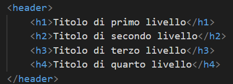
Articoli
Gli articoli sono dei tag il cui scopo è solo contenere altri blocchi di testo ,
Tipicamente il contenuto parte con un tag header.
Il resto del contenuto tipicamente è un elenco di tag section.
<article> contenuto </article>
Il tag section è ha sua volta un contenitore di blocchi di testo con un tag header iniziale facoltativo.
<section> header facoltativo + lista di tag di testo </section>
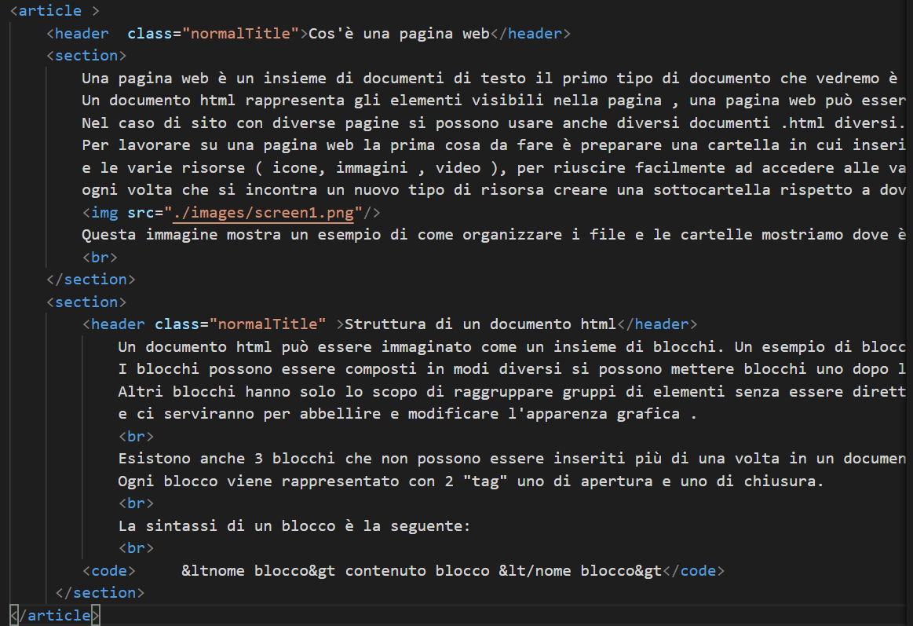
In questa immagine vediamo due regole non rispettate, lo header che dovrebbe essere solo un
contenitore per elementi tra h1 e h6. Si vede inoltre che il testo è inserito direttamente nel tag
section senza usare blocchi di testo e alcuni a capo sono forzati con <br> in caso di un testo
è consigliato usare blocchi <p> per dividere il testo in paragrafi , quando si chiude un <p>
e se ne apre un altro il contenuto andrà a capo. (questo serve per distinguere i paragrafi che tipicamente sono
regioni di testo con argomenti in comune). è presente un tag <code> questo tag si usa per
delimitare una parte di testo che è codice
(e quindi si può nella sezione grafica decidere di assegnare ad esso uno stile differente dal testo circostante).
Footer
Il footer rappresenta un blocco di testo che va a posizionarsi in fondo ad un articolo e/o in fondo ad una pagina.
Un esempio di footer è la nota a piè di pagina di Word.
La sintassi è la seguente
<footer> lista di tag di testo </footer>
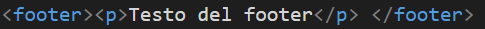
Suono
Il tag audio è da evitare se non in casi speciali, permette di riprodurre un file audio ma
spesso la riproduzione non è gradita. Anche in caso in cui i controlli siano forniti sull'interfaccia
spesso vengono ignorati.
Per completezza vediamo la sintassi velocemente.
<audio controls autoplay loop>
<source src="percorso del file formato.mp3" type="audio/mpeg">
</audio>
Il tag audio richiede uno o più tag source che con l'attributo type definiscono il tipo di file(mp3 nel caso di esempio)
e il link alla risors nell'attributo src.
Il tag audio può avere 3 attributi che non hanno bisogno di avere assegnato un valore.
Controls se inserito mostra i controlli per fermare o far ripartire la musica.
Autoplay se inserito fa partire la riproduzione dell'audio quando la pagina si è caricata.
Loop fa andare in loop l'audio una volta che la riproduzione termina.
Quindi per esempio se vogliamo che l'audio parta quando la pagina si carica ma non vogliamo dare controlli all'utente
per fermarla ma vogliamo che non vada in loop useremo come tag di apertura. <audio autoplay >Il blocco div
Fino ad ora abbiamo visto diversi blocchi alcuni con contenuti fissi come immagini altri con contenuti
che potevano andare da semplice testo a elenchi di tag di testo. Il blocco div è il primo blocco che preso da solo
non ha alcun significato, div indica semplicemente un blocco, serve per raggruppare componenti della pagina.
può contenere qualsiasi tag o elenco di tag e può essere contenuto praticamente in qualsiasi tag a parte tag come <img>
in cui non è presente un blocco di chiusura.
Il blocco div serve per la sezione grafica.
La sintassi è semplice.
<div> qualsiasi tipo di tag o lista di tag </div>
Attributi speciali
Esistono due attributi speciali che useremo nella parte di grafica , questi attributi possono
essere assegnati a qualsiasi tag contenuto nel body(e anche al body stesso).
Questi due attributi sono id e class. L'attributo id può avere qualsiasi valore ma per il corretto
funzionamento della pagina è necessario che non esistano elementi con lo stesso id , questo attributo
l'abbiamo incontrato già coi link interni alla pagina , l'utilizzo di id per definire un punto di salto interno
alla pagina necessita che non esistano due elementi con lo stesso id, altrimenti cliccando un link interno
il comportamento del browser sarebbe indefinito, a quale dei due elementi con id corrispondente al link dovrebbe portarci?
L'attributo class somiglia all'id ma non ha la restrizione di dover essere unico in tutto il documento.
Per assegnare certe caratteristiche specifiche ad elementi della pagina sarà necessario poter distinguere i vari elementi
della pagina, l'attributo id servirà per definire elementi unici per un unico elemento per esempio un elemento a cui vogliamo
mettere uno sfondo unico e non riutilizzato nel resto della pagina.
L'attributo class ci servirà invece per raggruppare sotto la stessa classe elementi con caratteristiche comuni
per esempio tutti i titoli a cui vogliamo assegnare una certa dimensione e colore.
Sia a div che a class è comodo assegnare nomi significativi per poter rileggere e capire le proprie intenzioni in un secondo momento.
Caratteri speciali
Per ulteriori simboli guardare la colonna entity code a questo sito.